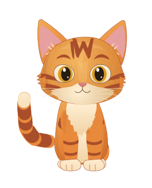

A small character. A whole lot of personality.
Meet Marmalade.
Four motions, one curious kitten.
Explore the rig before the story begins.
Idle / breathingLoading Rive…
Native Rive · continuous vector rig
Fidelity & motion review
Master alignment
Playback
Contact diagnostics
Guides use live native node transforms. Green = near-floor, stationary paw. Rear paws may be occluded by the frontal pose.
Live rig inputs
Waiting for native runtime…
Compare production neutral with Marmalade V1

Fur edges and shading are simplified for animation. The painted master remains unchanged.